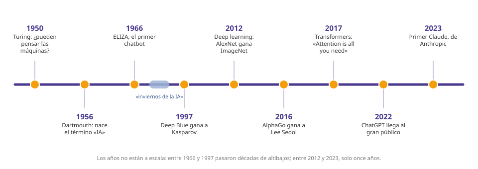

Módulo 2: Historia de la IA (I): de Turing al primer invierno
De la pregunta de Alan Turing a los primeros éxitos y las primeras decepciones.
La IA tiene más de 70 años. Empezó con una pregunta de Alan Turing (1950), recibió su nombre en 1956 y vivió años de mucho entusiasmo seguidos de «inviernos» en los que la gente dejó de creer en ella. Entender esos altibajos ayuda a no creerte ni el miedo ni el humo de hoy.
Los primeros pasos (1943-1980)

1. Antes de la IA: la idea
Desde la Antigüedad hay historias de máquinas y autómatas que parecen pensar. Pero la historia técnica empieza en el siglo XX, cuando aparecen los ordenadores. En 1943, Warren McCulloch y Walter Pitts propusieron un modelo matemático de una neurona, la semilla de las redes neuronales.
2. 1950: la pregunta de Turing
El matemático británico Alan Turing publicó en 1950 el artículo Computing Machinery and Intelligence, que empieza con una pregunta: «¿pueden pensar las máquinas?». Para no discutir qué es pensar, propuso un juego: si una persona conversa por escrito con una máquina y con otra persona y no sabe distinguirlas, la máquina pasa lo que hoy llamamos el test de Turing.
3. 1956: nace el nombre «inteligencia artificial»
En el verano de 1956 se celebró en el Dartmouth College (EE. UU.) un taller organizado por John McCarthy, Marvin Minsky, Claude Shannon y Nathaniel Rochester. McCarthy había acuñado el término «inteligencia artificial» en la propuesta del encuentro. Los participantes pensaban que en pocos años las máquinas aprenderían a usar el lenguaje y resolver problemas «de personas». Fueron demasiado optimistas.
4. Los años 50 y 60: primeros logros
| Año | Hito | Qué fue |
|---|---|---|
| 1952-1959 | Primeros programas que juegan a las damas | Arthur Samuel hizo que un programa mejorara jugando contra sí mismo: uno de los primeros ejemplos de «aprender» |
| 1958 | El perceptrón | Frank Rosenblatt construyó una máquina que aprendía a clasificar imágenes sencillas: una neurona artificial |
| 1966 | ELIZA | Joseph Weizenbaum (MIT) creó un programa que imitaba a un psicoterapeuta devolviendo preguntas. Muchos usuarios se sentían escuchados, aunque solo seguía reglas de texto |
| 1966-1972 | Shakey | Un robot de la Universidad de Stanford (SRI) que planificaba movimientos por una habitación |
5. El primer «invierno de la IA» (años 70)
Las promesas eran enormes y los resultados, modestos: los ordenadores eran lentos, había pocos datos y los problemas reales eran mucho más difíciles. En 1969 Minsky y Papert demostraron los límites de los perceptrones simples, y en 1973 el informe Lighthill en el Reino Unido criticó duramente los resultados de la IA. Los gobiernos recortaron fondos. Esa época de poco dinero y menos ilusión se conoce como el primer invierno de la IA.
Lo que nos enseña esta etapa
- 💡 Las ideas pueden llegar décadas antes que la tecnología necesaria.
- 💡 Las promesas exageradas llevan a decepciones: conviene ser crítico con los anuncios.
- 💡 La IA avanza por oleadas: entusiasmo, desencanto y nuevo impulso.